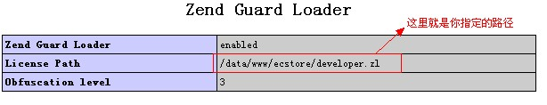

| name | version |
| centos | 6.3 |
| nginx | >= 1.2.4 |
| php | >= 5.3.17 |
| mysql | >= 5.5.28 |
| mongodb | >= 2.2 |
| memcached | >= 1.4.15 |
yum -y install wget make vim install gcc gcc-c++ ncurses ncurses-devel autoconf libjpeg libjpeg-devel libpng libpng-devel freetype freetype-devel libxml2 libxml2-devel zlib zlib-devel glibc glibc-devel glib2 glib2-devel bzip2 bzip2-devel curl curl-devel e2fsprogs e2fsprogs-devel krb5 krb5-devel libidn libidn-devel openssl openssl-devel openldap openldap-devel nss_ldap openldap-clients openldap-servers pcre pcre-devel zlip zlip-devel
libxml2 ———— 包含库和实用工具用于解析XML文件 wget http://xmlsoft.org/sources/libxml2-2.9.0.tar.gz tar zxvf libxml2-2.9.0.tar.gz cd libxml2-2.9.0 ./configure make&&make install libmcrypt ———— 加密算法扩展库(支持DES, 3DES, RIJNDAEL, Twofish, IDEA, GOST, CAST-256, ARCFOUR, SERPENT, SAFER+等算法) wget ftp://mcrypt.hellug.gr/pub/crypto/mcrypt/libmcrypt/libmcrypt-2.5.7.tar.gz tar zxvf libmcrypt-2.5.7.tar.gz cd libmcrypt-2.5.7 ./configure make && make install
机器码是授权文件的重要组成部分,每一台服务器都有一个独立的机器码,您只需运行由 ShopEx 所提供的 机器码生成工具来获取您的机器码即可【双网卡会有两个机器码】。 ShopEx 机器码生成工具————源码包中的“config/hardware.sh”文件
在hardware.sh目录下运行以下命令，运行完输出的则是您机器的唯一机器码 ： /usr/local/webserver/php/bin/php hardware.sh
收件人：cl@shopex.cn 邮件内容：您的机器码与您的公司名称 邮件标题：申请 ego license 授权文件
提示：每台服务器都有自己独立的机器码，双网卡也不例外，他会生成两个机器码。 在发送邮件时，请注明服务器类型（单网卡、双网卡），服务器之间以行间隔， 机器码之间以分号间隔。如以下是两台服务器一单网卡、一双网卡： 单：M:X2W7G-6PZLQ-YEMH6-V9HRG; 双：M:X2W7G-6PZLQ-YEMH6-V9HRY;M:X2W7G-6PZLQ-YEMH6-V9HRU;
打开php.ini，搜索“zend_loader.license_path”，把授权文件的存放路径赋值给“zend_loader.license_path=” 例：zend_loader.license_path='.../config/*****.zl'
